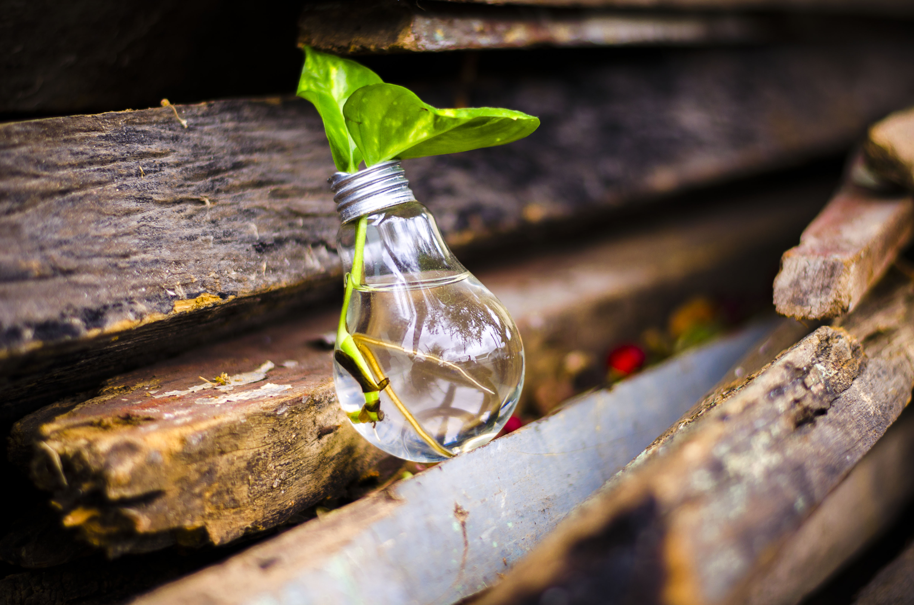

Where Can I Recycle?
Depending on your area the rules and designated areas will change. Most areas within the otago region have designated bins and weekdays for colection. We have information regarding the following areas Recycling and landfill centers within the otago region:
For information on recycling in other Areas of New Zealand, check out this handy list of Council recycling websites here!
Wait! How do I Recycle!?
Recycling is easy! typically there are 3 main bins that you can put your recycling and rubbish into. Making sure you know what goes in which bin is the first step, Luckily we`ve outlined this handy table for you!
| Bin Colour | What Can go in it? |
|---|---|
| Yellow | Rigid Plastics, Paper / Cardboard, Cans and Tins |
| Blue | Glass only! (Lids and bottle caps can remain on) |
| Red | Red bins are designed for any other waste that can not be recycled. |
What to do to get your rubbish and recycling collected.
Dunedin's rubbish collection is a user pays system. This is fairer for everyone as you only pay for what you throw out.
The DCC rubbish bag price includes collection, disposal and ETS contributions. This is combined with a kerbside recycling collection.
Note: Collection days vary by address.
- Utilise DCC authorised rubbish bags from the DCC Service Centres and other outlets.
- Put your recycling in your blue bin for glass or your wheelie bin for paper, rigid plastics packaging, cardboard, paper, aluminium and steel tins and cans.
- Place either the blue bin or the yellow lidded bin at the kerbside by 7am on collection day and not before 7pm the night before. Which bin will depend on the collection fortnight.
- Put it out on the footpath close to the kerb edge. Keep the footpath clear for pedestrians.
- Collection begins at 7am and can continue until 7pm on your collection day.
- If your rubbish/recycling is not collected, please contact us.
Queenstown Lakes
Wakitipu Recycling Center
Kerbside Recycling Collection Days
Please put your recycling wheelie bin out by 7am on your normal rubbish day. Find out your rubbish collection day
Recycling - what you need to know
At present kerbside glass collected in the Wakatipu is not recycled and is sent to the landfill. The issue with the kerbside glass collection in Wakatipu is that the glass colours are all mixed together and also mixed with other recyclables. This glass is separated out at the Wakatipu Recycling Centre, but as it is contaminated by other recyclables and not colour sorted, it is of low value and unable to be sold. As the glass is inert it assists as a face stabiliser at the landfill and prevents the need to import other materials for this purpose. Previously it was being crushed and used as a roading aggregate. This is different to the glass collected kerbside in the Wanaka Ward which is colour sorted at the kerb allowing it to be sold in Auckland who turn it back into glass bottles. A new kerbside collection service for glass will commence district wide in July 2019. This means the glass material will be clean and uncontaminated (not mixed with other materials) and will not be sent to landfill. What we end up doing with the glass material is yet to be decided.
Central Otago
Waste Busters
Waste Managment Plan
Our waste management activity collects and disposes of your rubbish, and provides access to transfer stations, green waste drop-offs and recycling. Waste minimisation focuses on leading, facilitating and educating the community on wiser resource use and environmental sustainability.
Other Important Bin Information
- Your bin MUST be out by 7am.
- Place your bin close to the kerb or roadside and half a metre way from other bins, poles, fences, letterboxes, etc.
- Maximum weight is 75kg. Do not overfill, your bin lid must be closed. Extra items placed on top or next to the bin will not be collected.
- Additional Council bins are available on request (charges apply). Commercial collections for recycling and rubbish can be arranged. Call Council for more information.
- If you have a business that generates large amounts of industrial waste and requires a skip or maxi bin collection please contact the contractor to arrange a private service: AllWaste Phone: (03) 441 3620.
- Bins are allocated to properties and charged for through a targeted rate. Each bin has a unique number, the bin address and collection day recorded on it. Newly built properties need to apply to the Council for their bins on completion of the building.
Clutha Region
Mount Cooee Landfill
Waste disposal and recycling at the Landfill
Mt Cooee accepts general waste, special waste, green waste and recyclables. Conditions do apply e.g. recyclables and greenwaste must be of accepted types only and special waste must be accompanied with a permit issued by Council.
Approved greenwaste includes lawn clippings, hedge clippings, leaves, tree trimmings with branches less than 150mm diameter, and garden weeds. Small amounts of soil associated with plant roots etc, is acceptable.
Accepted recyclables include rigid plastic containers (number 1-7), paper, flattened cardboard, aluminium tins and steel cans (Mixed).
Glass bottles and jars (separate from other recyclables) are accepted for reuse only; these are crushed and used for roading and drainage throughout the landfill.
Greenwaste and recyclables that do not meet these criteria will be treated as general waste.
Large quantities of clean fill are not accepted and special wastes (difficult or hazardous) are accepted only with a Special Waste Permit.
If you can recycle it in your yellow bin, then you can recycle it at Mt Cooee. That includes clean, rigid plastic containers, paper and cardboard, clean aluminium, steel cans and tins. These recyclables can be mixed.